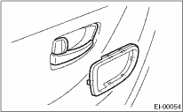
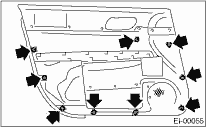

CAUTION:
Do not apply excessive force to the clip. There is the possibility of the clip being damaged.
1. Disconnect the ground cable from the battery.
2. Remove the gusset cover.
3. Pull up the inner remote cover to remove upper hook. Pull down the inner remote cover to remove lower hook. Remove the inner remote cover.

4. Remove the power window control switch. 
5. Remove the clips of trim panel using clip remover to remove the trim panel.
